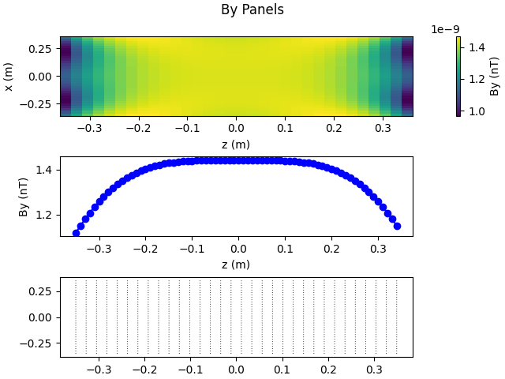
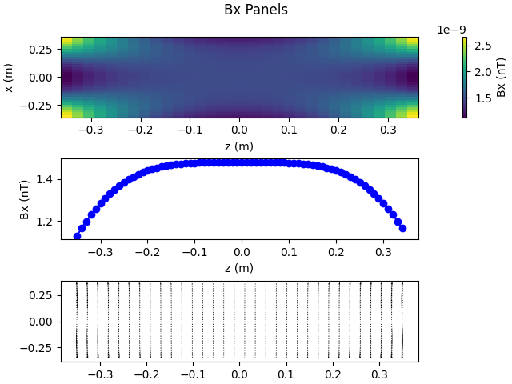
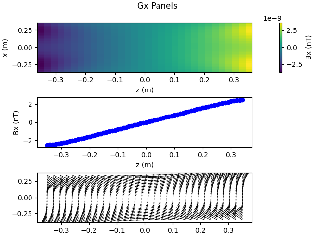
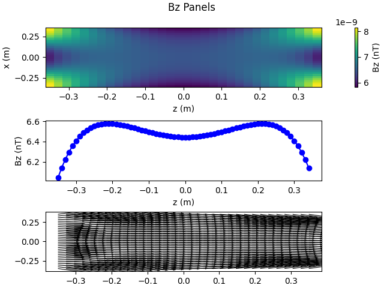
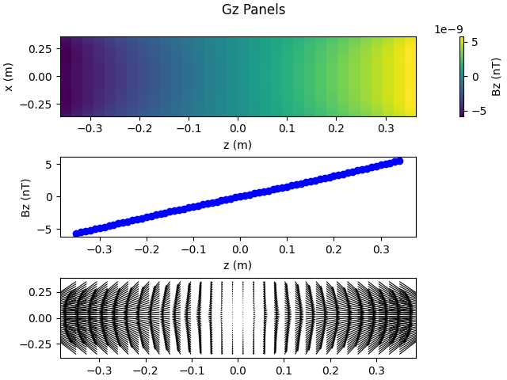

Note
Go to the end to download the full example code
Example demonstrating how to load Kicad PCBs and evaluate their performance.
This will load and plot the Bx, Gx, Bz, Gz from the development directory, and By and Gy from the production directory.
- 
- 
- 
- 
- 
Resistance of By panel is 11.410013514352219 ohms
# Authors: Mainak Jas <mjas@mgh.harvard.edu>
# Padma Sundaram <padma@nmr.mgh.harvard.edu>
from pathlib import Path
import numpy as np
import argparse
import matplotlib.pyplot as plt
from opm_coils import PCBPanel, load_panel, plot_panel
from opm_coils.panels import (flip_chains, flip_chain, plot_combined_panels,
check_half_names)
import h5io
def prod_By(panel=None):
"""Loads and plots the By panel"""
pcb_folder = 'production/By_coil'
current = dict(left=1e-3, right=-1e-3)
if not panel:
panel = load_panel(pcb_folder, flip=['left_bott', 'right_bott'])
# panel.adjust_standoff(1.45)
if panel:
plot_panel(panel, .7, 32, current=current, axis='y', title='By Panels')
return panel
def dev_Gy(panel=None):
"""Loads and plots the Gy panel"""
pcb_folder = 'development/Gy_coil'
current = dict(left=1e-3, right=1e-3)
if not panel:
panel = load_panel(pcb_folder, standoff=1.408, rearrange=True,
flip=['left_second', 'right_second'])
if panel:
plot_panel(panel, .7, 32, current=current, axis='y',
gradient=True, title='Gy Panels')
return panel
def dev_Bx(panel=None):
"""Loads and plots the Bx panel"""
pcb_folder = 'development/Bx_coil'
current = dict(left=-1e-3, right=1e-3)
if not panel:
panel = load_panel(pcb_folder, standoff=1.416,
flip=['left_second', 'right_second'])
if panel:
plot_panel(panel, .7, 32, current=current, axis='x', title='Bx Panels')
return panel
def dev_Gx(panel=None):
"""Loads and plots the Gx panel"""
pcb_folder = 'development/Gx_coil'
current = dict(left=-1e-3, right=-1e-3)
if not panel:
panel = load_panel(pcb_folder, standoff=1.424)
if panel:
plot_panel(panel, .7, 32, current=current, axis='x',
gradient=True, title='Gx Panels')
return panel
def dev_Bz(panel=None):
"""Loads and plots the Bz panel"""
pcb_folder = 'development/Bz_coil'
current = dict(left=1e-3, right=1e-3)
if not panel:
panel = load_panel(pcb_folder, standoff=1.432)
# panel = load_panel(pcb_folder, standoff=1.3)
if panel:
for key in panel.chains.keys():
if 'first' in key:
for i in [3, 1, 4, 6, 0, 5, 25, 12, 17, 20]:
flip_chain(panel.chains[key][i])
elif 'second' in key:
for i in [20, 5, 13, 30, 29, 2, 14, 6, 15, 9, 4, 23, 21, 18]:
flip_chain(panel.chains[key][i])
if panel:
plot_panel(panel, .7, 32, current=current, axis='z', title='Bz Panels')
return panel
def dev_Gz(panel=None):
"""Loads and plots the Gz panel"""
pcb_folder = 'development/Gz_coil'
current = dict(left=1e-3, right=-1e-3)
if not panel:
panel = load_panel(pcb_folder, standoff=1.440)
if panel:
for key in panel.chains.keys():
if 'first' in key:
for i in [9, 11, 13, 12, 15, 2, 16, 5]:
flip_chain(panel.chains[key][i])
elif 'second' in key:
for i in [5, 3, 10, 15, 7, 6, 0, 11, 17]:
flip_chain(panel.chains[key][i])
if panel:
plot_panel(panel, .7, 32, current=current, axis='z',
gradient=True, title='Gz Panels')
return panel
if __name__ == "__main__":
parser = argparse.ArgumentParser()
parser.add_argument('pcb_path', nargs='*',
help='Path to pcb project files.')
parser.add_argument('-r', '--rearrange', action='store_true',
help='Treat first/second as top/bottom')
parser.add_argument('-g', '--gradient', action='store_true',
help='Apply same current to both panels')
parser.add_argument('-f', '--file', action='store_true',
help='Use hdf5 file to load data.')
args = parser.parse_args()
rearrange = False
if args.rearrange:
rearrange = True
hardware_folder = Path.cwd().parent / 'hardware'
pcb_folder = False
gradient = False
if args.gradient:
gradient = True
if not pcb_folder:
panels = dict()
if hardware_folder:
panels_dict = h5io.read_hdf5(hardware_folder / 'hdf5' / 'panels.hdf5')
for key, pan in panels_dict.items():
panels[key] = PCBPanel(panel_dict=pan)
prod_By(panels['By'])
dev_Gy(panels['Gy'])
dev_Bx(panels['Bx'])
dev_Gx(panels['Gx'])
dev_Bz(panels['Bz'])
dev_Gz(panels['Gz'])
print(f'Resistance of By panel is {panels["By"].resistance()} ohms')
else:
panels['By'] = prod_By()
panels['Gy'] = dev_Gy()
panels['Bx'] = dev_Bx()
panels['Gx'] = dev_Gx()
panels['Bz'] = dev_Bz()
panels['Gz'] = dev_Gz()
else:
if gradient:
current = dict(left=-1e-3, right=-1e-3)
else:
current = dict(left=1e-3, right=-1e-3)
panel = load_panel(pcb_folder, flip=['left_bott', 'right_bott'])
plot_panel(panel, .7, 32, current=current, axis='y', gradient=gradient)
plt.show()
# Examples
# 1. Show how to load the KiCAD file and save to HDF5
# 2. Next, show how to plot from HDF5
# 3. Finally, show how to plot combined field.
# # 3D plot of B coils
# plot_combined_panels([panels['By'],
# panels['Bx'],
# panels['Bz']],
# [dict(left=1e-3, right=-1e-3),
# dict(left=-1e-3, right=1e-3),
# dict(left=.2e-3, right=.2e-3)],
# target_points)
#
# # 3D plot of G coils()
# plot_combined_panels([panels['Gy'],
# panels['Gx'],
# panels['Gz']],
# [dict(left=1e-3, right=1e-3),
# dict(left=-1e-3, right=-1e-3),
# dict(left=.2e-3, right=-.2e-3)],
# target_points)
#
# #all coils
# plot_combined_panels([panels['By'],
# panels['Bx'],
# panels['Bz'],
# panels['Gy'],
# panels['Gx'],
# panels['Gz']],
# [dict(left=1e-3, right=-1e-3),
# dict(left=-1e-3, right=1e-3),
# dict(left=.2e-3, right=.2e-3),
# dict(left=1e-3, right=1e-3),
# dict(left=-1e-3, right=-1e-3),
# dict(left=.2e-3, right=-.2e-3)],
# target_points)
## Use for saving all panels to file
# panels_dict = dict()
# for key, panel in panels.items():
# panels_dict[key] = panel.to_dict()
#
# h5io.write_hdf5('panels.hdf5', panels_dict)
# Use for saving each panel to file
# for key, panel in panels.items():
# h5io.write_hdf5(f'{key}.hdf5', panel.to_dict())
Total running time of the script: (0 minutes 14.551 seconds)